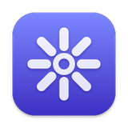
Lumina
Your desktop’s Swiss Army knife.
The small tools you reach for all day, folded into one panel in your menu bar. Free, open source and made for macOS.
Latest release · Requires macOS 26 · Updates itself
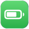
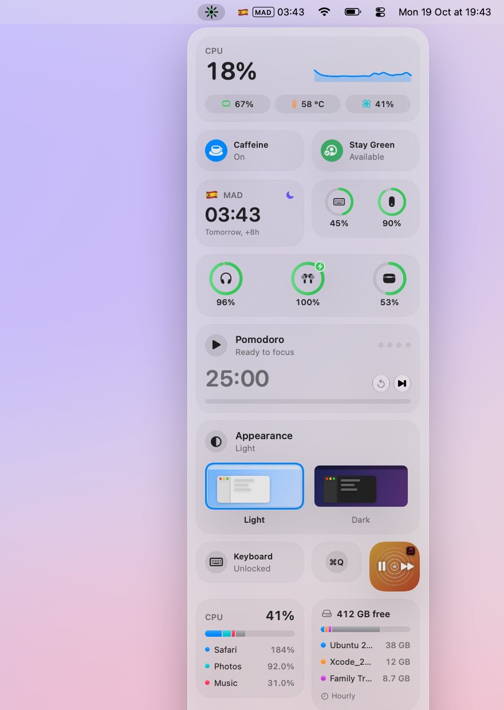
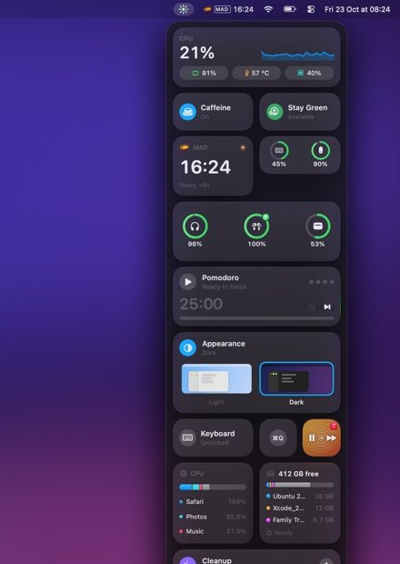
Get the highlights.
Every utility in one panel. Show the ones you use, hide the rest.
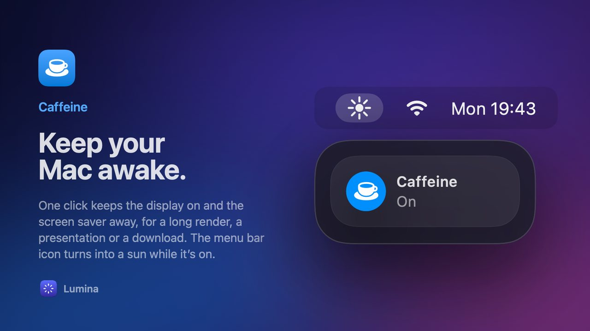
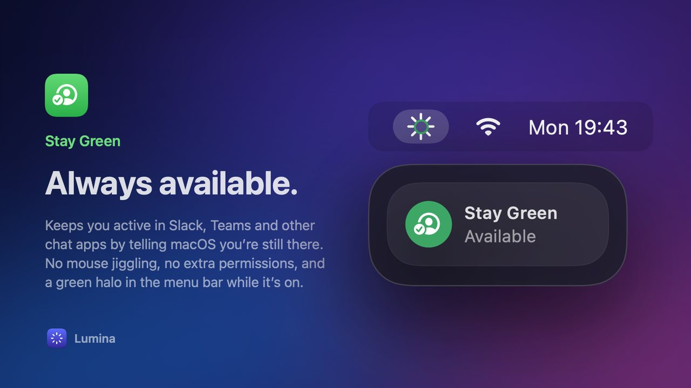
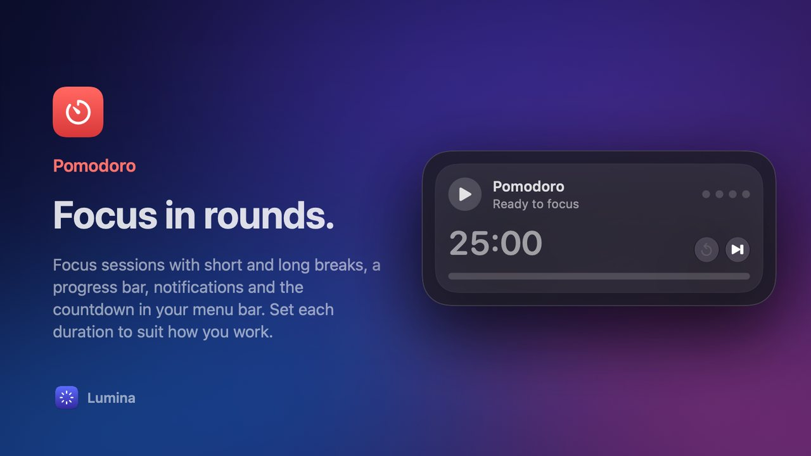
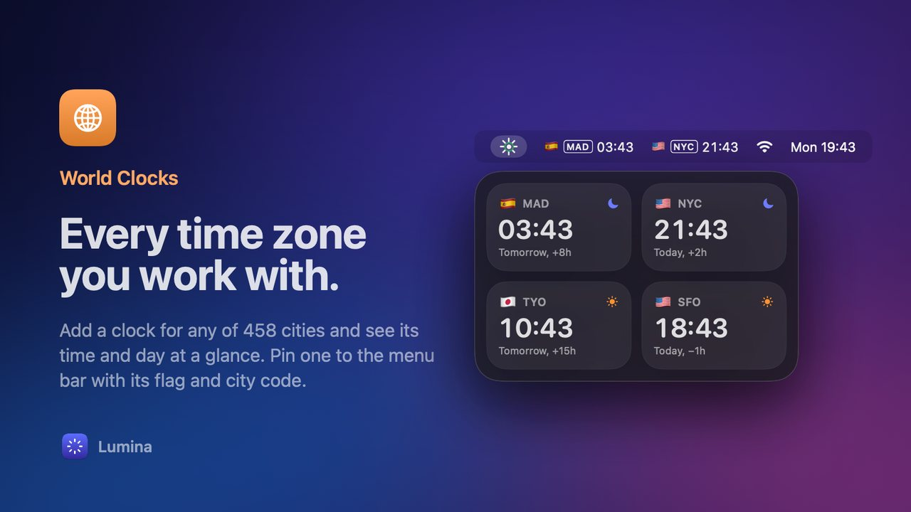
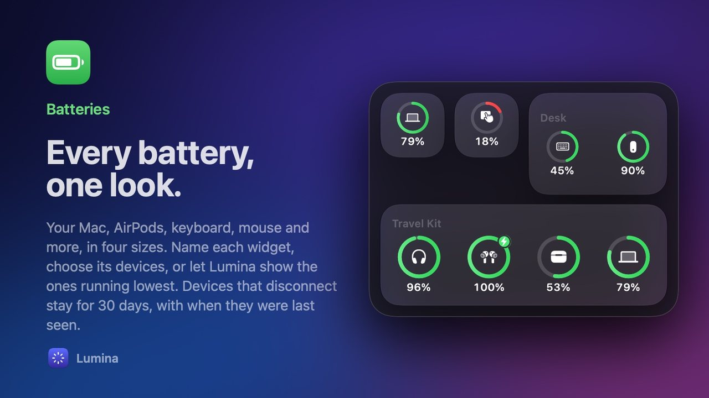
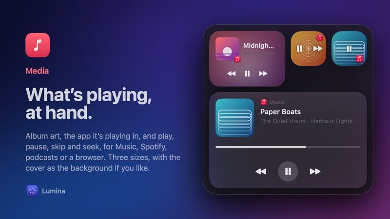
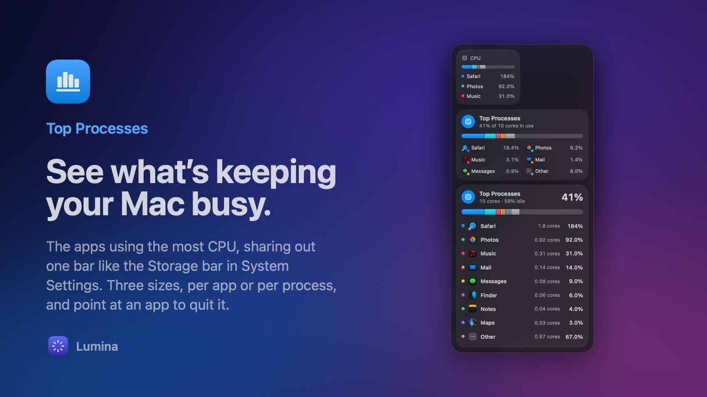
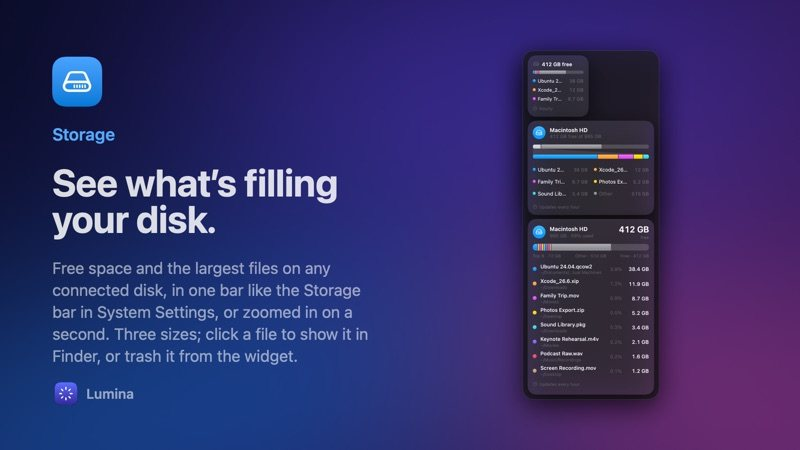
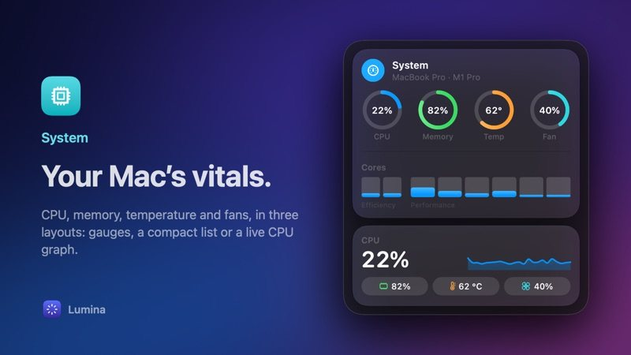
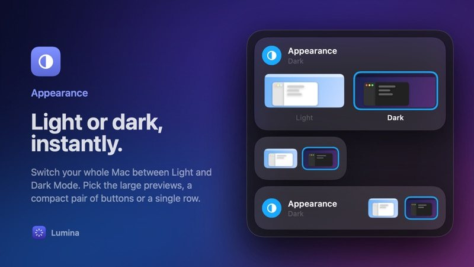
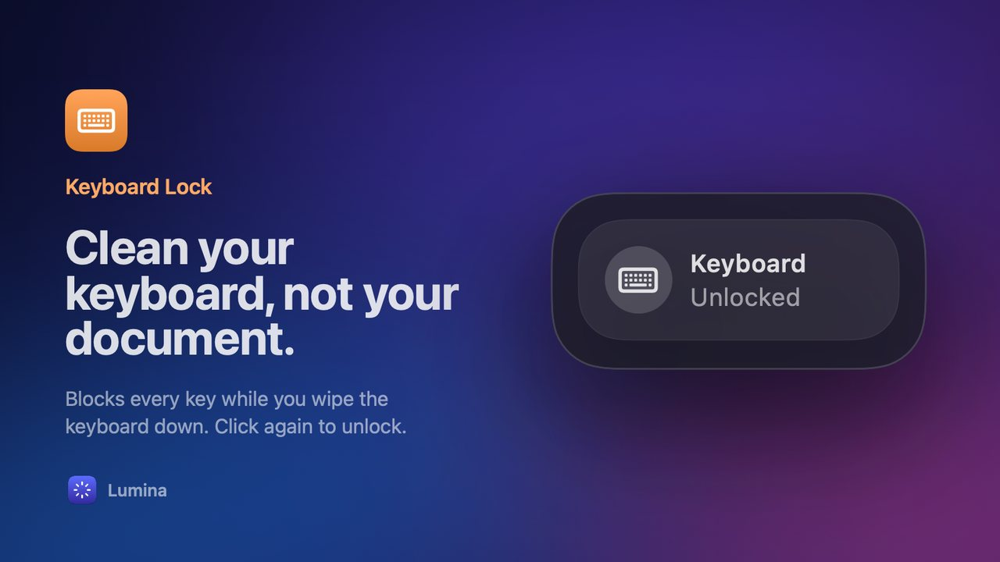
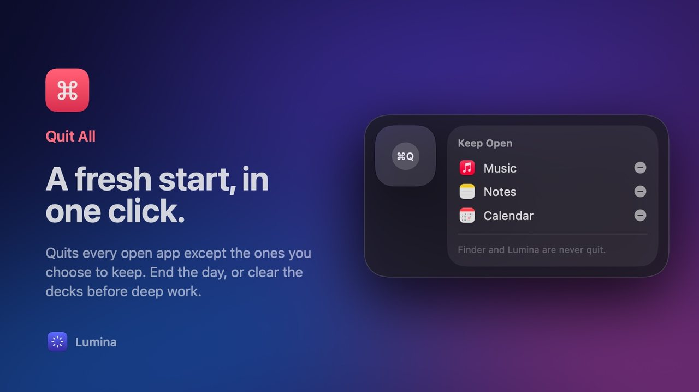
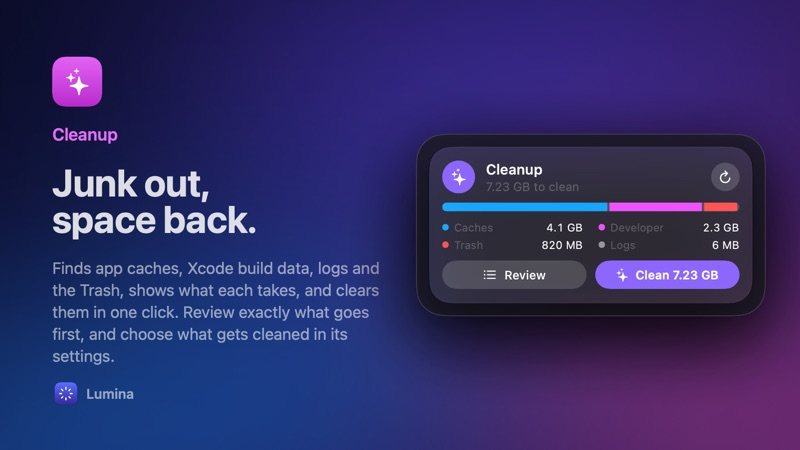
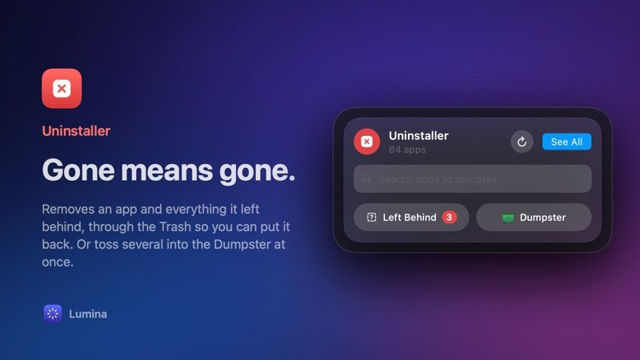
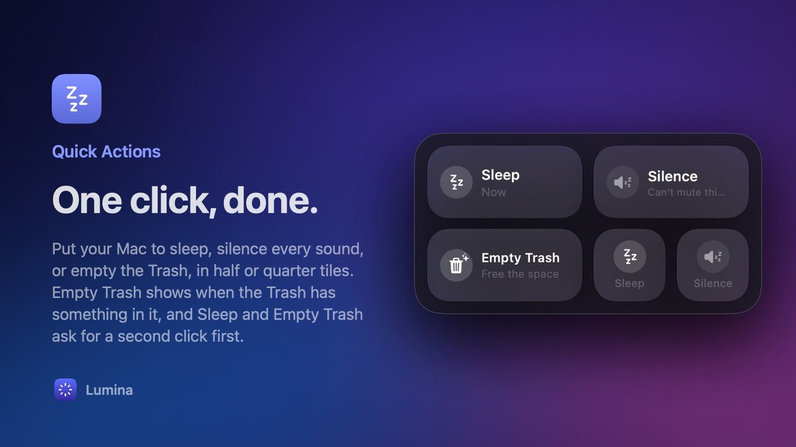
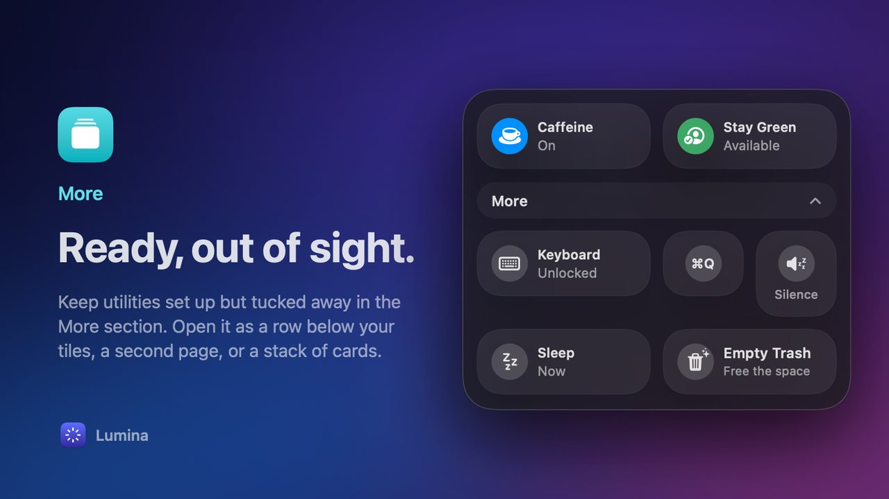
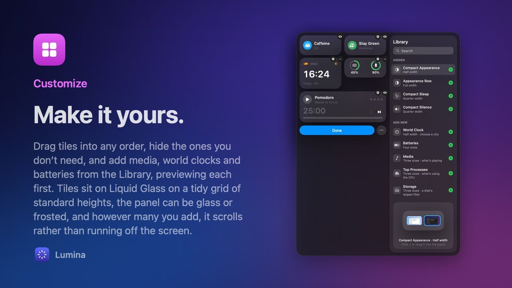
Install in a minute.
Lumina isn’t notarized by Apple, so macOS asks you once to allow it.
- Download and unzip Get Lumina.zip from the latest release and open it.
- Move it to Applications Drag Lumina.app into your Applications folder, then open it.
- Click Open Anyway The first time, macOS says it can’t check the app. Scroll to Security and click Open Anyway next to Lumina. System Settings › Privacy & Security
You only do this once. Lumina checks for updates when it opens and every six hours, and installs them in place.